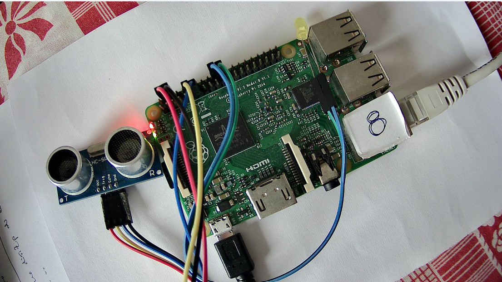
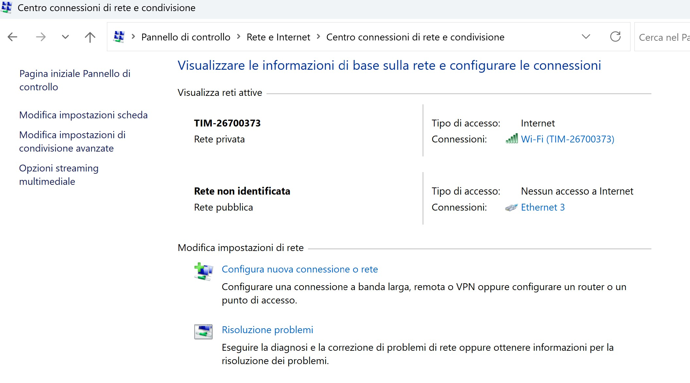
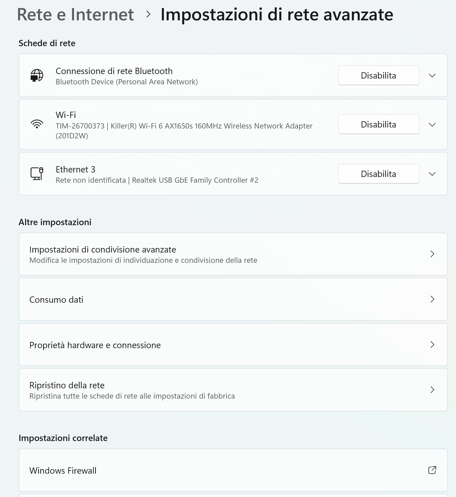
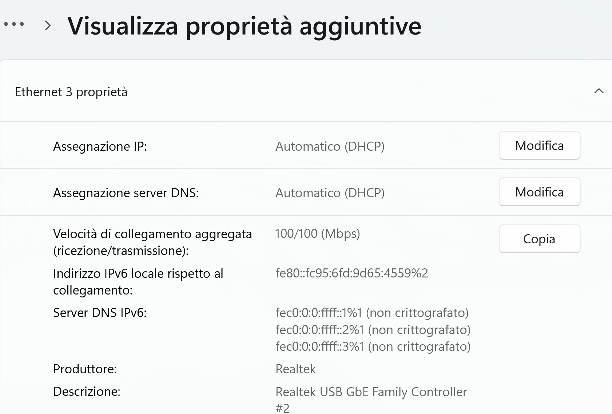
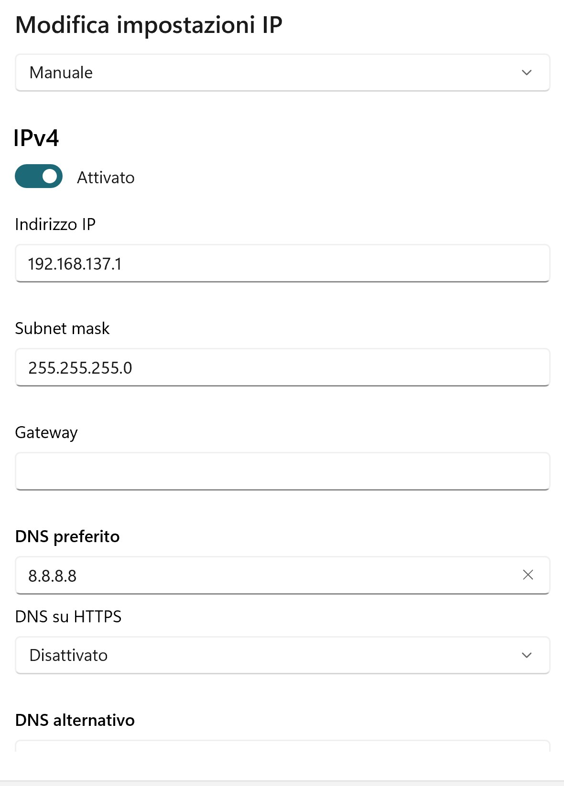

RaspberryStartingVideo¶
raspberryStarting¶
{kind=link}
In questo esperimento, connettiamo il Raspberry al PC tramite un cavo Ethernet, tenendo conto di quanto detto in Se non abbiamo WIFI.
Il problema è che Windows11 potrebbe non configurare l’IP statico
della connessione Ethernet a 192.168.137.1.
In tal caso, proviamo a configurarlo manualmente.
Su Windows11¶
Pannello di controlloRete e InternetCentro connessioni di rete e condivisione
{kind=link}
Vediamo Impostazioni -> impostazione di Ethernet
{kind=link}
Apriamo Ethernet3 e accediamo alle proprietà aggiuntive
{kind=link}
Modifichiamo (se necessario) le proprietà IPv4
{kind=link}
Connessione Ethernet privata¶
Problema: Driver differenti della scheda di rete Ethernet potrebbero influenzare la classificazione predefinita della rete.
Per rendere accessibile mosquitto su PC senza disattivare il firewall di Windows è necessario cambiare la rete Ethernet da pubblica a privata.
Windows powershell (administrator)
Get-NetConnectionProfile ---> (alias = Ethernet 2)
Set-NetConnectionProfile -InterfaceAlias "Ethernet 2" -NetworkCategory Private
Rete e Intenet: su Ethernet 2 adesso compare Rete privata
Ispezioniamo il Raspberry¶
cat /etc/os-release
PRETTY_NAME="Raspbian GNU/Linux 11 (bullseye)"
NAME="Raspbian GNU/Linux"
VERSION_ID="11"
VERSION="11 (bullseye)"
VERSION_CODENAME=bullseye
ID=raspbian
ID_LIKE=debian
HOME_URL="http://www.raspbian.org/"
SUPPORT_URL="http://www.raspbian.org/RaspbianForums"
BUG_REPORT_URL="http://www.raspbian.org/RaspbianBugs"
cat /proc/cpuinfo
processor : 0
...
processor : 1
...
processor : 2
...
processor : 3
...
Hardware : BCM2835
Revision : a01041
Serial : 00000000461d8a38
Model : Raspberry Pi 2 Model B Rev 1.1
I dispositivi connessi¶
Usiamo un LED (Anodo + BCM25 (fisico 22) Catodo - GND (fisico 20))
Rasp2025Ledalone¶
Rasp2025Led2Ctx¶
Sistema a due contesti su 192.168.137.1/2¶
Quando il Raspberry Pi tenta di creare un Socket verso il PC sulla porta 8180, il sistema operativo del PC riceve la richiesta di connessione TCP (SYN packet). Tuttavia, poiché non c’è alcuna applicazione o servizio in “ascolto” (in stato di LISTEN) su quella specifica porta, il PC rispondeva con un pacchetto di “connessione rifiutata” (RST o RST/ACK).
Il comportamento di blocco che osservi sul Raspberry Pi è dovuto al fatto che la funzione Socket(hostName, portNum) tenta di stabilire una connessione TCP e rimane in attesa fino a quando la connessione non viene stabilita con successo o si verifica un timeout (che a volte può essere lungo). In questo caso, probabilmente il sistema operativo del Raspberry Pi stava aspettando una risposta positiva (ACK) dal PC che non arrivava mai (arrivava invece un RST).
Cerca “Firewall di Windows Defender con sicurezza avanzata” nel menu Start e aprilo.
Nel pannello di sinistra, fai clic su “Regole in entrata”.
Nel pannello di destra, fai clic su “Nuova regola…”.
Seleziona “Porta” e fai clic su “Avanti”.
Seleziona “TCP”.
In “Porte locali specifiche”, inserisci 8180.
In “Indirizzi IP remoti”, puoi:
Selezionare “Questi indirizzi IP” e aggiungere 192.168.137.2 per consentire solo le connessioni dal tuo Raspberry Pi.
Selezionare “Qualsiasi indirizzo IP” per consentire connessioni da qualsiasi dispositivo sulla rete (meno restrittivo).
Fai clic su “Avanti”.
Seleziona “Consenti la connessione”.
Fai clic su “Avanti”.
Seleziona i profili di rete a cui si applica la regola (dovresti selezionare almeno “Privato” e potenzialmente “Pubblico” se la tua connessione Ethernet è classificata come tale).
Assegna un nome alla regola (es. “Consenti TCP 8180 da Raspberry Pi”) e fai clic su “Fine”.